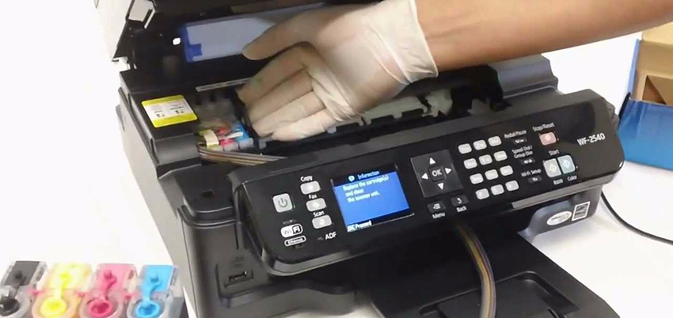

Impresoras Ricoh/Epson
Servicio técnico, mantenimiento y reparación de impresoras Ricoh y Epson, para empresas y particulares.

Mantenimiento
Servicio preventivo y correctivo para mantener tus equipos siempre listos.

Reparación Ricoh
Especialistas en diagnóstico y reparación de impresoras Ricoh.

Revisión Epson
Calibración y ajustes técnicos para impresoras Epson de oficina y producción.